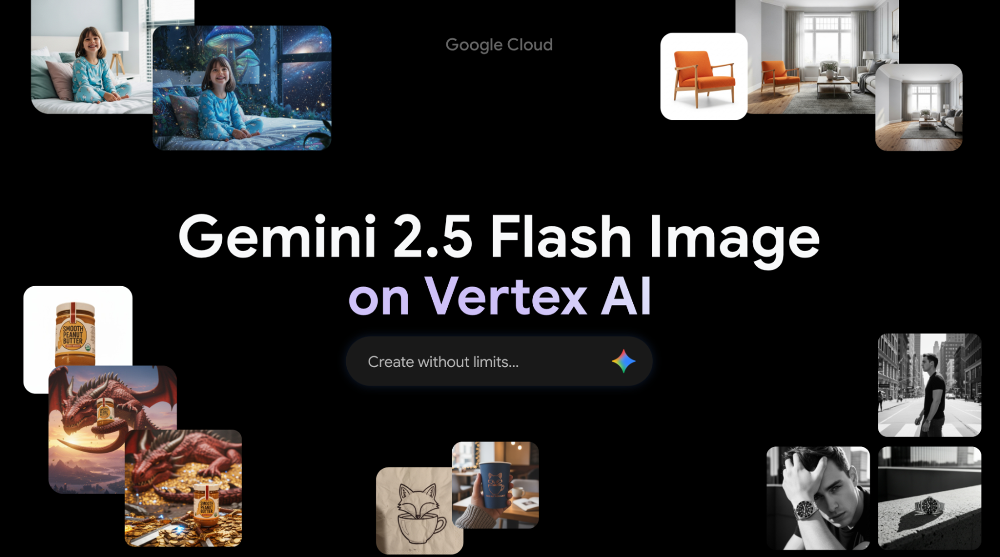

A böngésződ nem támogatja a videó taget.
Pohánka És Társa Kft
Kezdőlap
Blog
Blog
Érdekes témák és segédanyagok
Függőség
Olvasd el a teljes cikket
Hogyan építi Kína a világ legerősebb mesterséges intelligencia hálózatát a semmi közepén?
Olvasd el a teljes cikket
Következő generációs vizuális elemek építése Gemini 2.5 Flash Image segítségével Vertex AI-n

Olvasd el az egész cikket